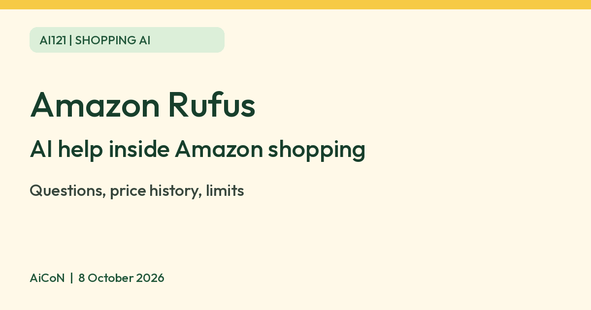

Amazon Rufus: the AI shopping assistant in the Amazon India app
Rufus is Amazon India's AI shopping assistant. Amazon says you can ask it shopping questions in the Amazon Shopping app and on Amazon.in, and that it may not always get things right. Treat it as a guide, then check the product page yourself.

What it is
Rufus is an AI-powered shopping experience from Amazon. Amazon's help page says you can ask all kinds of shopping questions in the Amazon Shopping app and on Amazon.in. Amazon's India launch post (November 2024) says it answers questions on shopping needs, products and comparisons and makes recommendations.
How to open it
- Update the Amazon Shopping app and tap the Rufus icon in the bottom navigation bar (chat bubbles with a sparkle), per Amazon.
- On Amazon.in, use the Rufus button at the top left of the navigation bar. A chat window opens.
- Type a question or tap a suggested one.
Amazon says you can still search the usual way. Rufus and search work together.
What Amazon says it can do
| Ask and compare | Answers shopping questions, compares products and suggests items. |
|---|---|
| Price history | Amazon's March 2026 India release says Rufus gives 30 to 90 day price history, with a Price history option on the product page. |
| Price alerts | The same release says you can ask Rufus to set a price alert for a target price. |
| Language | Amazon's help page says to pick your language from the flag on the top banner. |
Limits to know
- Amazon itself says Rufus is AI-powered and may not always get things right. Check specs, size, seller and return terms on the product page.
- Rufus is Amazon's shopping assistant, so it is built to help you buy on Amazon. For a big purchase, compare prices elsewhere too.
- Amazon's help page says personal information is used under its Privacy Notice. We did not verify details of what is stored.
- Amazon's pages do not state a charge for Rufus, and we quote none.
- We did not test it ourselves, and we did not check how well it handles every Indian language.
Frequently asked questions
Is Rufus part of Alexa+?
We found no Amazon page saying so. They are separate Amazon products as far as we checked.
Can I still use normal search?
Yes, per Amazon.
Can it be wrong?
Yes. Amazon says so on its help page.
Sources: Amazon.in Help: About Rufus, About Amazon India: Rufus launch, Amazon India press release, March 2026. Checked 8 October 2026.